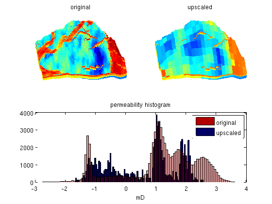

Harmonic Upscaling of Realistic Field Model
In this example, we will perform a simple harmonic permeability upscaling on a model from the project "Sensitivity Analysis of the Impact of Geological Uncertainties on Production Forecasting in Clastic Hydrocarbon Reservoirs" (SAIGUP). The model has faults, inactive cells, and disconnected components, but no pinch-out. To this end, we form an overlying coarse grid by partitioning the fine-grid uniformly in logical Cartesian space and then use a set of relatively simple calls to 'accumarray' to perform the upscaling.
Contents
Load and process data
We assume that the data has been downloaded and placed in the appropriate data directory under the MRST root directory.
try grdecl = readGRDECL(fullfile(ROOTDIR, 'examples', 'data', ... 'SAIGUP', 'SAIGUP.GRDECL')); grdecl = convertInputUnits(grdecl, getUnitSystem('METRIC')); G = processGRDECL(grdecl); G = computeGeometry(G); rock = grdecl2Rock(grdecl, G.cells.indexMap); catch me error('SAIGUP model data is not available.') end
Upscale model
Upscale the model by a factor 5x5x5 using a simple harmonic average for the permeability and arithmetic average for the porosity. (This demonstrates the power of the accumarray call..)
require coarsegrid; w = G.cells.volumes; p = partitionUI(G, G.cartDims./[5 5 5]); for i=1:size(rock.perm,2) K = accumarray(p,w./rock.perm(:,i))./accumarray(p,w); crock.perm(:,i) = 1./K; end crock.poro = accumarray(p, rock.poro.*w)./accumarray(p,w);
Visualize result
As expected, using such a naive upscaling will move the permeability values towards the centre of their fine-scale spectre.
clf
pargs = {'EdgeColor','none'};
subplot(2,2,1)
plotCellData(G,log10(rock.perm(:,1)),pargs{:});
view(-95,40); axis tight off; cx = caxis; title('original');
subplot(2,2,2)
plotCellData(G, log10(crock.perm(p,1)), pargs{:});
set(gca,'zdir','reverse');
view(-95,40); axis tight off; caxis(cx); title('upscaled');
subplot(2,2,3:4)
hist(log10(convertTo(rock.perm(:,1),milli*darcy)), 100);
hold on
hist(log10(convertTo(crock.perm(p,1),milli*darcy)), 100);
hold off
h=get(gca,'Children');
set(h(1),'FaceColor',[0 0 0.4])
set(h(2),'FaceColor',[0.7 0 0],'FaceAlpha',.4)
legend('original','upscaled');
title('permeability histogram'); xlabel('mD');
